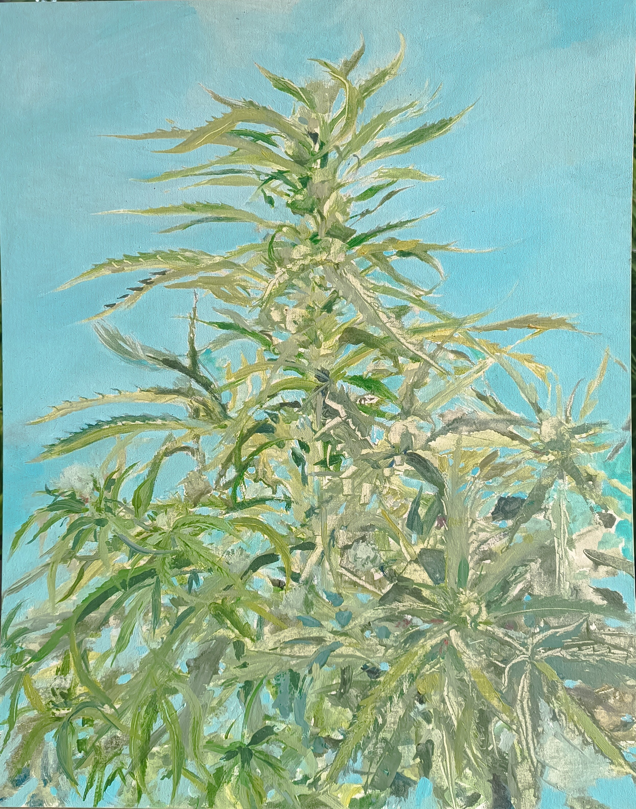
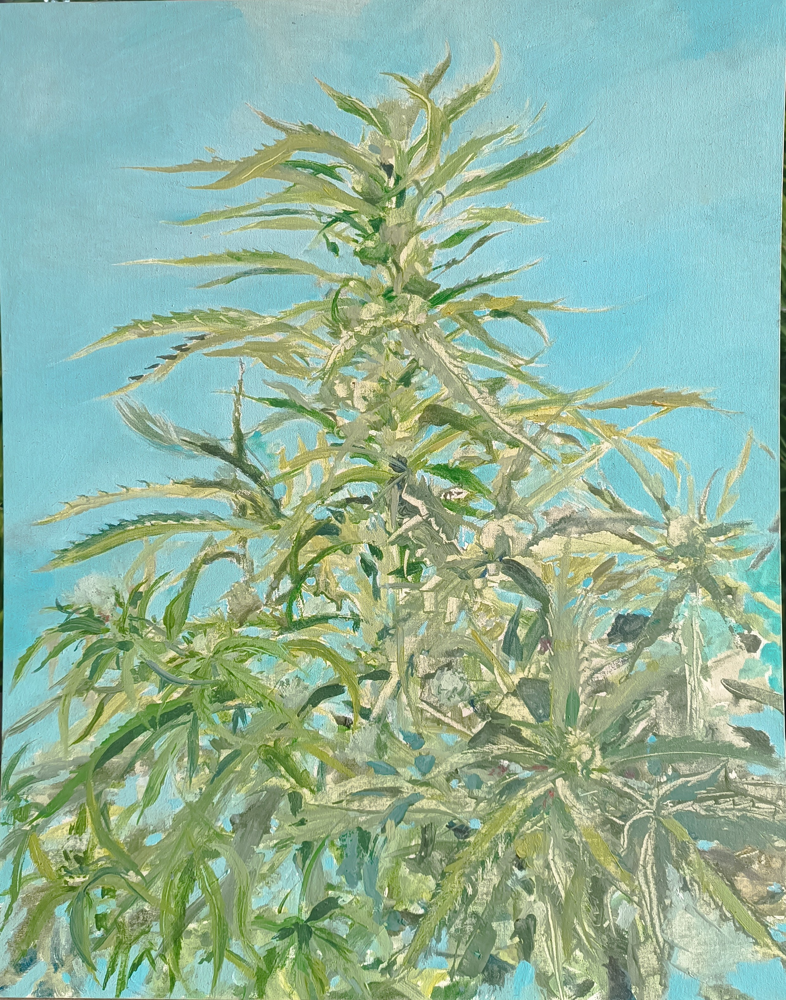
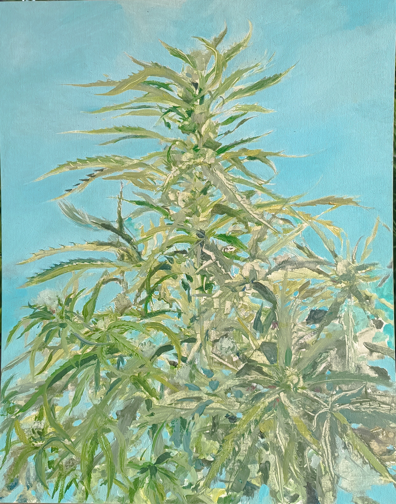

Irena Gašperšič, born in Ljubljana, graduated from the Academy of Fine Arts under Prof. Janez Bernik, and later studied graphic arts under Prof. Kiar Meško outside the academy. She sees painting as part of the ancient tradition of shamanism and healing through visual expression. Following the idea that every thought naturally tends toward realization, Irena views painting — thoughts expressed on a two-dimensional surface — as visual guides of energies that attract harmonious vibrations. In a world full of change and challenge, where art often follows the trends of the moment, she sees painting as a chance to offer the observer a space of calm and inspiration, found in timeless motifs, imaginative strokes, and living color relationships.
Phone: 00 386 68 658 113
Email: gasper.irena@gmail.com
